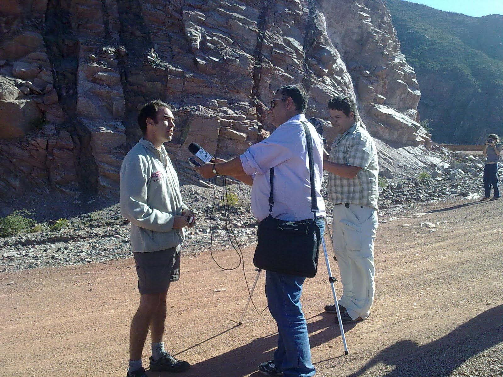
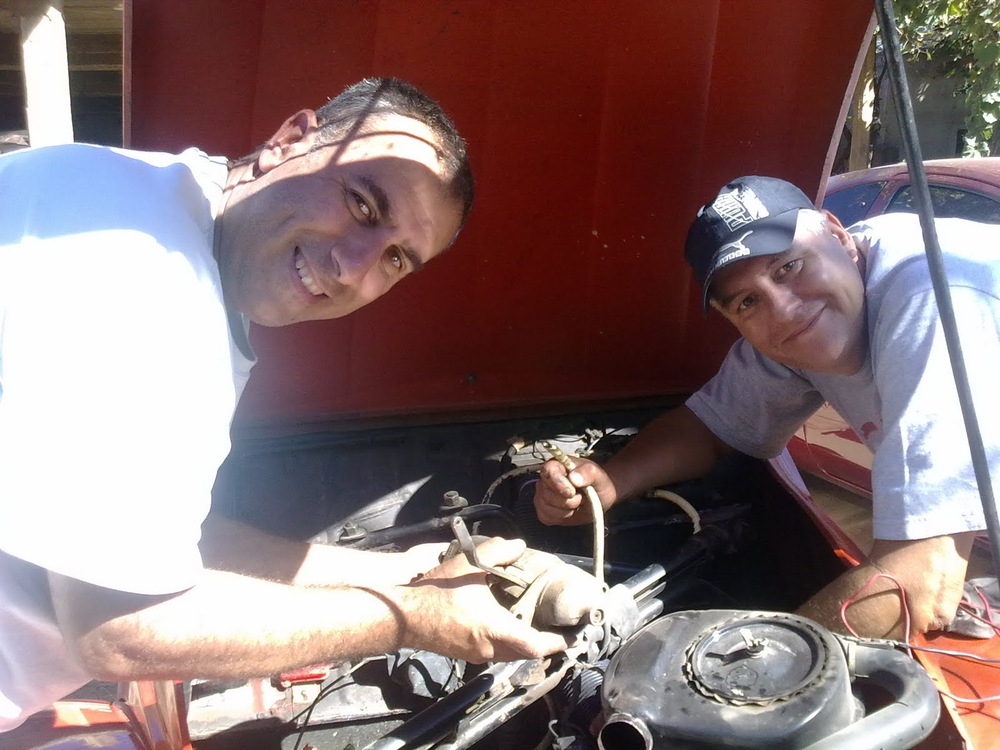

Lo Primero que debemos decir es que a las 4:30 am del 25/3 partieron y dejaron el Tour Juanma y Manuel Izquierdo. A Manoli, como todos lo llaman, lo conocí en este viaje, y déjenme decirle que me pareció un tipo fuera de serie , por su humor sutil y su buena predisposición. La verdad es que se los está extrañando y todos les mandamos un fuerte abrazo. Para seguir llenando nuestros corazones, ese día se nos unieron en su "Meriva" Pedro y Noelia.
Chilecito nos encontró con unos cuantos problemas mecánico sin resolver. La providencia divina hizo que nos cruzáramos con el 1º mecánico de Citroën de esa ciudad, quien tenia unas cuantas Citronaves en desguace. Él nos Proveyó del Burro, una ventanilla, algunos repuestos y nos presto un carburador, con la condición que se lo devolvamos por correo..... Que podemos decir, la gente buena existe en este mundo!!
También acá nuestros citronautas representantes de prensa, estuvieron en una conferencia con los medios y recibieron todas las muestra de apoyo de los habitantes del lugar
Lo mejor del día estuvo en la Cuesta de Miranda, es un camino de cornisa con un paisaje mas que hermoso. Al llegar al mirador, en el medio de la nada, nos cruzamos con una combi de la cual se bajaron 2 personas con cámara y micrófono en mano. Era periodista de un diario (El Independiente) y de la televisión que deseaban entrevistarnos. Martín se maquilló y salio a escena. Canchero ya por tantas entrevistas y conferencias, se desenvolvió muy sueltamente.
Comentario especial merece un a 4x4 ultimo modelo, que a una velocidad mas que imprudente, paso por el sitio donde estábamos detenidos. El periodista nos comento, que dicho vehículo pertenecía a la empresa minera. Cuenta que estas personas comúnmente se desplazan por estos caminos a altas velocidades y que siempre salieron impunes de los accidentes que tuvieron. La Frase utilizada fue, ellos compran su inocencia y la familia se queda llorando sus muertos.....Nada muy distinto a lo que desarrollan con su controvertido accionar en la minería. En lo personal esto me indigna!!!!
Luego de un largo andar, arribamos a Baldecitos. Dicho caserío, esta próximo al Valle de la Luna, o Ichigualasto (como es su nombre). En ese lugar nos alojamos en lo de Alba. Comimos locro o fideos con estofado.....Muy Rico!!!! y nos brindaron alojamiento para colocar nuestras bolsas de dormir bajo techo, ya que había mucho viento para las carpas. Después de cenar vino un Fernet y la identificación de estrellas mediante un programa de computadoras....Muy bueno!!!